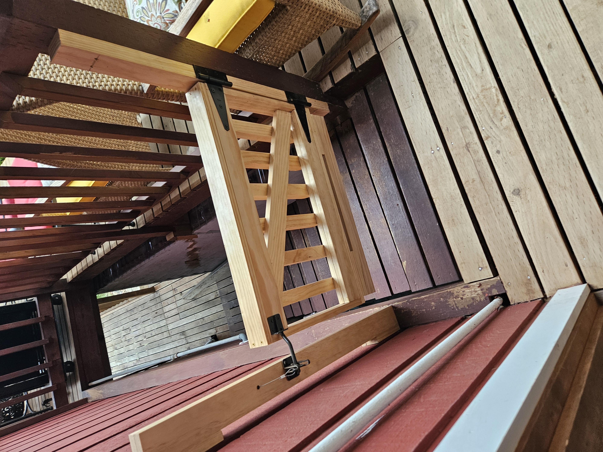
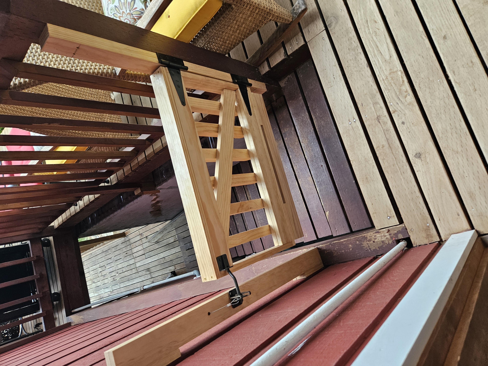

woodworking
i first started woodworking in highschool and took it for several terms, once i went to college i was unable to in my
freshmen year, but this year i have started again. recently i have built a pair of shelves out of walnut and am currently working on a side table
desk


my desk is my favorite and most impressive project, which i made in my senior year of highschool, its top is a white oak live edge slab
and the legs are also made from white oak. the surface of the desk is inlayed with fossilized fish as can be seen in the photos, which
i harvested in wyoming. to keep them safe i placed a quarter inch thick piece of clear acrlic on top so the surface of the desk is still smooth
coffee table


the coffe table was my first project when i was in my sophmore year, the top is spalted alder, also live edge like the desk, however the leg
design is very unique, i based it off the davinchi self supporting bridge design so that it could stand without any screws, inreality screws
used so that it is stable, but it can still stand without them, end the screws are used so that it can be slightly disasembled without tools
gate

 

this gate is a good example of something ive done for lot of projects where i create a mockup in blender to get an idea for which design i want
to use, ive also done it for the above desk and coffee table. i made this gate for my home so that we could stop using the metal one
pictured to keep my dog out and have a better option